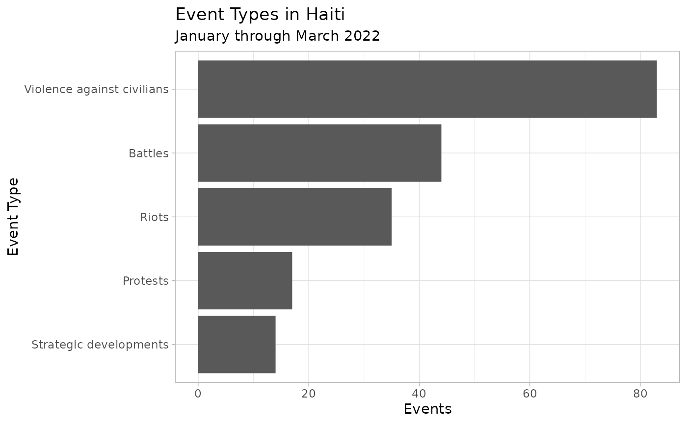
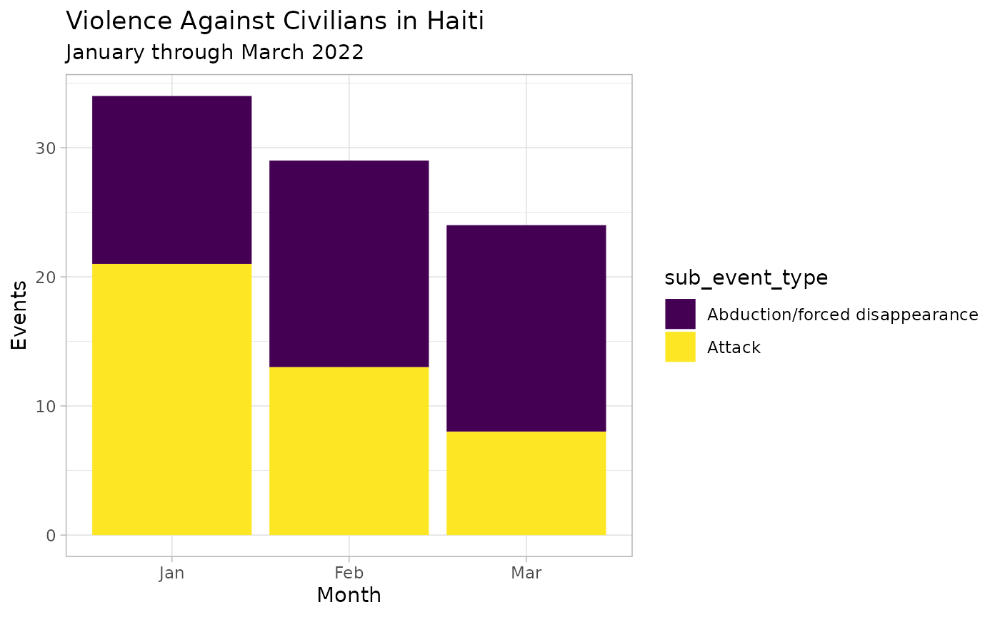

ACLED collects and codes reported information on three general types of events: political violence, demonstrations, and select non-violent politically important events. Under these general categories, there are 6 event types and 25 sub-event types. This vignette provides only an introduction to these event types, for a more detailed explanation please visit our guide.
This page describes each event and sub-event type in ACLED and shows how to access them via acledR.
- To see all event and sub-event types, jump to the Full List
- To read more about the violent event types, jump to Violent Events
- To read more about the demonstrations, jump to Demonstrations
- To read more about the non-violent actions, jump to Non-Violent Actions
- To see a simple analysis of event types using
acledR, jump to theacledRExample
Full List
|
|
|
Violent Events
Battles:
ACLED defines a battle as “a violent interaction between two politically organized armed groups at a particular time and location.” Battles can occur between armed and organised state, non-state, and external groups, and in any combination therein. There is no fatality minimum necessary for inclusion. Although the term “battle” may be used here to describe various kinds of encounters between parties – e.g. “the ceasefire is broken” – battles must be violent events involving at least two armed and organized actors. One-sided interactions – e.g. reports of shots fired into the air without a target – are categorized as ‘Strategic developments’ (see below). Violence against unarmed civilians is categorized as ‘Violence against civilians’, although civilians can also be harmed as “collateral damage” in ‘Battles’ or ‘Explosions/Remote violence’ events. When harmed in the event of a battle or explosions, a separate civilian-specific event is not recorded, but the fatalities, if any, are aggregated in the “Fatalities” column.
The specific elements of that definition therefore are as follows:
- A violent interaction is the exchange of armed force, or the use of armed force at close distance, between armed groups capable of inflicting harm upon the opposing side.
- Organized armed groups are collective actors assumed to be operating cohesively around an agenda, identity, or political purpose, using weapons to inflict harm. These groups frequently have a designated name and stated agenda.
The following sub-event types are associated with the ‘Battles’ event type and are designated according to the outcome of the battle event: ‘Armed clash’, ‘Government regains territory’, and ‘Non-state actor overtakes territory’.
- Armed clash: If armed, organized groups engage in a battle, and no reports indicate a change in territorial control, the correct sub-event type is an ‘Armed clash’.
- Non-state actor overtakes territory: When a non-state actor wins control and/or subdues government forces, and/or has won territory in which they can now act with impunity and are regarded as having a monopoly of force within that territory, ‘Non-state actor overtakes territory’ is the correct sub-event type. Short-lived territorial exchanges that do not last for more than one day are coded as ‘Armed clash’. In cases where government and non-state forces fight many times in a location before a non-state group gains control, only the final territorial acquisition is coded as ‘Non-state actor overtakes territory’. All other battles in that location are coded as ‘Armed clash’. This sub-event can also be used to note the transfer of control from one non-state group to another by violence.
- Government regains territory: This sub-event type is used to describe cases where government forces or their affiliates fighting against competing state forces or against a non-state group regain control of a location. This code is only used for re-establishment of government control and not for dual non-state violence. Short-lived territorial exchanges that do not last for more than one day are coded as ‘Armed clash’.
Explosions/Remote violence:
ACLED defines ‘Explosions/Remote violence’ as “one-sided violent events in which the tool for engaging in conflict creates asymmetry by taking away the ability of the target to respond”. The tools used in instances of ‘Explosions/Remote violence’ are explosive devices, including, but not limited to, bombs, grenades, improvised explosive devices (IEDs), artillery fire or shelling, missile attacks, heavy machine gun fire, air or drone strikes, or chemical weapons. Suicide attacks implicating the use of bombs also fall under this category. When any instance of ‘Explosion/Remote violence’ is reported in the context of an ongoing battle, they are merged and coded as a single battle event. ‘Explosions/Remote violence’ can be waged on both armed agents or on civilians. When accounting for all attacks on civilians, explosions/remote violence with civilian targets should be included.
The following sub-event types are associated with the ‘Explosions/Remote violence’ event type: ‘Chemical weapon’, ‘Air/drone strike’, ‘Suicide bomb’, ‘Shelling/artillery/missile attack’, ‘Remote explosive/landmine/IED’, and ‘Grenade’.
- Chemical weapon: This sub-event type is coded whenever chemical weapons are used in warfare in the absence of any other engagement. ACLED considers chemical weapons all substances listed in the Schedule 1 of the Chemical Weapons Convention, including sarin gas, mustard gas, chlorine gas, and anthrax. Napalm, white phosphorous, as well as tear gas and other non-lethal crowd control substances, are not considered to be chemical weapons within this sub-event type.
- Air/drone strike: This sub-event type is coded whenever air or drone strikes have occurred in the absence of any other engagement. Please note that any air-to-ground attacks fall under this sub-event type, including attacks by helicopters that do not involve any exchange of fire with forces on the ground.
- Suicide bomb: This sub-event type is coded whenever a suicide bombing occurs in the absence of any other engagement (other engagement could include gun fire against other armed groups or civilians). It also includes suicide vehicle-borne improvised explosive device (SVBIED) attacks
- Shelling/artillery/missile attack: This sub-event type is coded whenever a long-range artillery or missile system is used in the absence of any other engagement. It also includes attacks described as shelling, the use of artillery either stand-alone or tank based, mortars, or guided missiles. Planes shot down by rockets or artillery fall under this sub-event type; unmanned drones shot down, however, given no human targets, are coded as an interception under ‘Disrupted weapons use’ (see below). Similarly, while planes shot down using rockets or artillery fall under this sub-event type, an interception of a strike itself (such as by the Iron Dome of Israel) are coded as ‘Disrupted weapons use’ as well given no human targeting. Rocket-propelled grenades (RPGs) are coded under the ‘Shelling/artillery/missile attack’ sub-event type as opposed to ‘Grenade’ given their similarities to artillery.
- Remote explosive/landmine/IED: This sub-event type is coded whenever remotely- or victim-activated devices are detonated in the absence of any other engagement. Examples include landmines, improvised explosive devices (IEDs) whether alone or attached to a vehicle, or any other sort of remotely detonated or triggered explosive. Unexploded ordinances (UXO) also fall under this category. Suicide vehicle-borne improvised explosive devices (SVBIED) are coded as ‘Suicide bomb’ (see above), while the safe defusal of an explosive or its accidental detonation by the actor who planted it (with no other casualties reported) are coded under ‘Disrupted weapons use’ (see below).
- Grenade: This sub-event type is used when a grenade or another explosive is thrown in the absence of any other engagement. Events involving “crude bombs” (such as Molotov cocktails, firecrackers, cherry bombs, petrol bombs, etc.) as well as ‘stun grenades’ are not coded in this category but are included under either ‘Riots’ or ‘Strategic developments’ depending on the context where they occurred.
Violence against civilians:
ACLED defines ‘Violence against civilians’ as violent events where an organised armed group deliberately inflicts violence upon unarmed non-combatants. By definition, civilians are unarmed and cannot engage in political violence. The perpetrators of such acts include state forces and their affiliates, rebels, militias, and external/other forces.
In cases where the identity and actions of the victims are in question (e.g. the target may be employed as a police officer), ACLED determines that if a person is harmed or killed while unarmed and unable to either act defensively or counter-attack, this is an act of ‘Violence against civilians’. There is no minimum number of civilian fatalities needed to qualify as an ACLED event.
‘Violence against civilians’ includes attempts at inflicting harm (e.g. beating, shooting, torture, rape, mutilation, etc.) or forcibly disappearing (e.g. kidnapping and disappearances) civilian actors.
The following sub-event types are associated with the ‘Violence against civilians’ event type: ‘Sexual violence’, ‘Attack’, and ‘Abduction/forced disappearance’.
- Sexual violence: This sub-event type is used when any individual (regardless of gender) is targeted with sexual violence. ‘Sexual violence’ is defined largely as any action that inflicts harm of a sexual nature. This means that it is not limited to solely penetrative rape, but would also include actions like public stripping, sexual torture of men, etc.
- Attack: This sub-event type is used when civilians are targeted with any violence by an organised armed actor. Attacks of sexual nature are coded as ‘Sexual violence’.
- Abduction/Forced disappearance: This sub-event type is used when an actor engages in the abduction or forced disappearance of civilians, without reports of further violence. If fatalities or serious injuries are reported as a consequence of the forced disappearance, the event is coded as ‘Attack’ instead. Note that this sub-event type does not cover state-sanctioned arrests, unless they are reported to have been conducted extra-judicially. By contrast, non-state groups can never engage in arrests, and their activity engaging in “arresting” is typically coded using this sub-event type
Demonstrations
Protests:
A protest is defined as a public demonstration in which the participants do not engage in violence, though violence may be used against them. Events include individuals and groups who peacefully demonstrate against a political entity, government institution, policy, group, tradition, businesses or other private institutions. Events that are not coded as protests are symbolic public acts such as displays of flags or public prayers (unless they are accompanied by a demonstration), protests in legislatures such as parliamentary walkouts or MPs staying silent, strikes (unless they are accompanied by a demonstration), and individual acts such as self-harm actions (e.g. individual immolations or hunger strikes).
Protesters are noted by generic terms (e.g. ‘Protesters (Country)’); if representing a group, the name of that group is recorded in the respective associated actor column.
The following sub-event types are associated with the ‘Protests’ event type: ‘Peaceful protest’, ‘Protest with intervention’, and ‘Excessive force against protesters’.
- Peaceful protest: This sub-event type is used when demonstrators are engaged in a protest while not engaging in violence or other forms of rioting behavior and are not faced with any sort of force or engagement.
- Protest with intervention: This sub-event type should be used when individuals are engaged in a peaceful protest during which there is an attempt to disperse or suppress the protest without serious/lethal injuries being reported or the targeting of protesters with lethal weapons. Additionally, this sub-event type should cover any instance where armed groups or rioters interact with peaceful protesters without resulting in serious/lethal injuries.
- Excessive force against protesters: This sub-event type should be used when individuals are engaged in a peaceful protest and are targeted with violence by an actor leading to (or if it could lead to) serious/lethal injuries.
Riots:
‘Riots’ are violent events where demonstrators or mobs engage in disruptive acts, including but not limited to rock throwing, property destruction, etc. They may target other individuals, property, businesses, other rioting groups or armed actors. Rioters are noted by generic terms (e.g. ‘Rioters (Country)’); if representing a group, the name of that group is recorded in the respective ‘Associated actor’ column. Rioters may begin as peaceful protesters, or may be intent on engaging in spontaneous and disorganized violence from the beginning of their actions. Contrary to armed groups, rioters do not use sophisticated weapons such as guns, knives or swords. “Crude bombs” (e.g. Molotov cocktails, petrol bombs, firecrackers) may be used in rioting behavior. The following sub-event types are associated with the ‘Riots’ event type: ‘Violent demonstration’ and ‘Mob violence’.
- Violent demonstration: This sub-event type is used when a group of individuals engages in a demonstration involving violence. Examples of rioting behavior include vandalism; road-blocking using barricades, burning tires, or other material; other types of violent and/or destructive behavior are also included here.
- Mob violence: This sub-event type is used when rioters violently interact with other rioters, another armed group or civilians, outside of demonstrations and without the use of lethal weapons like guns, knives, swords, etc. A mob is defined as “a large crowd of people, especially one that is disorderly and intent on causing trouble or violence.” Note that this type of violence can also include (unarmed or crudely armed) vigilante mobs clashing with other armed groups or attacking civilians. Vigilante groups that are more than crudely armed are not considered to be spontaneous mobs and rather are assumed to be organized and would hence not be included here.
Non-Violent Actions
Strategic Developments:
In some cases, ACLED also records events which could be broadly categorized as “non-violent” but that differ in its role inside context. These events, coded as “strategic Developments” are important pieces of context which may be connected to future upticks of violence, thus they are included in the data set to provide a better understanding a given context of disorder. Users are free to visit our guide on how to use strategic developments for analysis to find examples on how to use this event type. Strategic Developmets include:
- Agreements (e.g. Peace agreements / summits)
- Arrests (e.g. Politically sensitive arrests)
- Change to measures/activity (e.g. mergers or splinters of violent groups, movement of forces, recruitment by force, or particular security measures)
- Disrupted weapons use (e.g. Defuseing of explosives, ‘ineffective’ detonations, interceptions or weapon seizures)
- Headquarters or base established
- Looting/property destruction (e.g. Land seizure, looting, property destruction)
- Non-violent transfer of territory
- Other (e.g. mass graves, displacements, military takeovers, explosive remnants of war like cluster bombs or mines, elections/referendums)
acledR Example
To see how event types and sub-event types look in practice, let’s pull data from Haiti for the first few months of 2022 sing the acled_api() function:
library(acledR)
acled_access(email = "acledexamples@gmail.com", key = "M3PWwg3DIdhHMuDiilp5") # This is an example, you will need to input your credentials.
#> $Success
#> [1] "Authorisation accepted"
df_haiti <- acled_api(countries = c("Haiti"),
start_date = "2022-01-01",
end_date = "2022-03-31",
monadic = F,
prompt = FALSE)With some quick data wrangling with dplyr and plotting with ggplot2, we see that the most common event_type was violence against civilians.
library(dplyr)
library(ggplot2)
# event counts by event_type
df_haiti %>%
group_by(event_type) %>%
tally() %>%
# start plotting
ggplot() +
geom_bar(aes(x = forcats::fct_reorder(event_type, n), y = n), # reorder bars by count
stat = "identity") +
theme_light() +
# flip the axes
coord_flip() +
# name the axes (opposite because coordinates were flipped)
labs(y = "Events", x = "Event Type",
title = "Event Types in Haiti",
subtitle = "January through March 2022")
Let’s further investigate the variation in the most common event_type, violence against civilians, by breaking it down by sub_event_type and month.
df_haiti %>%
# filter to only violence against civilians
filter(event_type %in% c("Violence against civilians")) %>%
# create an indicator for month
mutate(month = lubridate::month(event_date, label = T)) %>%
# create counts by sub_event_type-month
group_by(sub_event_type, month) %>%
tally() %>%
# start plotting
ggplot() +
geom_bar(aes(x = month, y = n, fill = sub_event_type),
stat = "identity") +
# fill palatte
scale_fill_viridis_d() +
theme_light() +
labs(y = "Events", x = "Month",
title = "Violence Against Civilians in Haiti",
subtitle = "January through March 2022")